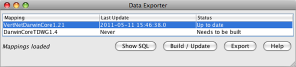

The Data Exporter application is used to build, update and export data files for use by IPT. Before a data file can be created a 'map' must first be created using the Schema Mapping Editor inside Specify. For documentation explaining how to create a schema map please refer to the Web Publishing.
The Data Exporter tool actually creates a table, or cache, in the database containing all relevant data based on the map that was created from inside Specify. This table of data then needs to be exported as a tab delimited text file for importing into IPT.
The Data Exporter application is located in the bin directorydirectory within the Specify application directory, which stores the executable files for Specify. Double click Exporter (or select it from Start/Program Files/Specify on Windows) to launch the tool. Users are required to login using their Specify Username and Password.
The Data Exporter application opens as a three column table with action buttons.

Available Actions
Show SQL - Click this button for a mapping whose cache has been completed to generate a dialog showing an SQL select statement that can be copied and used when defining database connections to the cache for IPT or other data providers.
Note: the SQL is based on the current cache structure. If the cache needs to be rebuilt and mappings have been changed, the SQL statement generated will not reflect the changes until the cache is updated.
Update/Build - This will update the cache. When the cache is built or updated it is writing to the database; therefore, the username and password for the database is required before Specify can complete the task.
For caches that do not need to be built, only out-of-date rows are updated. This is significantly faster than an initial build which can take a long time. Updates are not allowed for mappings that are being edited or updated by another user; therefore, users should close all schema mappings before updating.
Export - This exports the current contents of the cache to a tab-delimited text file.
Note: The CURRENT contents are exported, if the cache needs to be updated, you should update first if you want to export the latest data.
Cancelling an Operation - You can cancel an update or export by clicking the ‘X’ button to close the application window. You will be asked to confirm the cancellation. If you cancel, you will need to start from the beginning the next time you perform the operation.
Note: If you cancel an update that required a rebuild, the pre-existing cache will have been deleted.